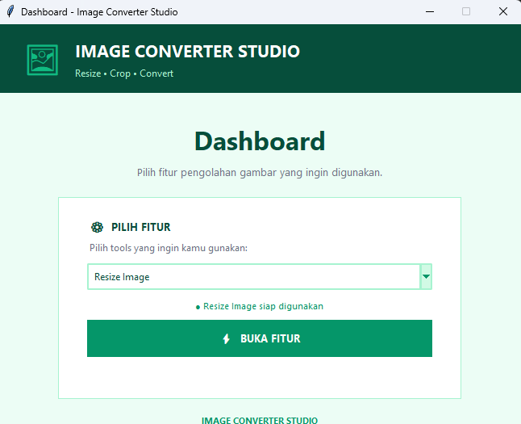

HTML5
Menyusun struktur halaman web yang semantik dan rapi.

Sebagai siswa Konsentrasi Rekayasa Perangkat Lunak di SMK Brantas Karangkates, saya terus mengasah kemampuan dalam pembuatan website modern dengan fokus pada tampilan antarmuka yang menarik dan nyaman digunakan oleh pengguna.
Menyusun struktur halaman web yang semantik dan rapi.
Menguasai Flexbox, CSS Grid, Media Query, dan prinsip Mobile-First.
Membuat halaman web interaktif dan dinamis.
